Prompt Life v0.27.17 Visual Aid Quality Pass 1
Generated 2026-06-12T03:21:11.544Z. This pass inspected all 39 visual-aid catalog entries, reviewed the 12 priority visuals deeply, repaired the coded mechanism visuals that needed clearer model boundaries, and prepared Image 2 prompts for the four social/ethical candidates. No generated PNG assets were added.
Executive Summary
The pass keeps exact mechanisms coded and moves atmospheric social concepts into a future Image 2 queue. Fine-Tuning received stronger durable-versus-temporary callouts. Attention, MLP, Layers, Hidden States, Logits, Softmax, and Sampling were refined as coded SVGs/HTML so learners see source-target relevance, per-token feature reshaping, repeated transformer blocks, temporary hidden-state flow, raw-score boundaries, softmax normalization, and one-token sampling more clearly.
Priority Visual Table
| Learning card | Current type | Concept | Issue | Action taken | Remaining concern | Next recommendation |
|---|---|---|---|---|---|---|
| Collective Intelligence, Extracted | coded SVG/HTML | Human-created traces can enter training data; rights questions remain human and institutional. | Social/provenance idea can feel too chart-like if overdiagrammed. | Left learner UI unchanged and created a production Image 2 prompt with HTML callouts. | Needs a future textless PNG before replacing the coded scene. | Generate Image 2 asset in a dedicated asset pass. |
| Benefits Worth Taking Seriously | coded SVG/HTML | Benefits can be useful while still bounded by evidence, context, safeguards, and review. | Tier concept is more judgment landscape than exact mechanism. | Left learner UI unchanged and created a production Image 2 prompt with outside callouts. | Future PNG must avoid hype, miracle imagery, and baked-in labels. | Generate Image 2 asset after visual tone review. |
| Costs We Must Count | coded SVG/HTML | AI outputs depend on infrastructure, human systems, power, and governance choices. | Invisible costs benefit from atmosphere, but numbers and claims must stay out of the image. | Left learner UI unchanged and created a production Image 2 prompt. | Generated asset must avoid fake statistics and disaster imagery. | Generate Image 2 asset with strict negative prompt. |
| Human-Centered AI | coded SVG/HTML | AI can support decisions, but review, governance, dignity, and accountability remain human. | Accountability concept needs warmth without robot judges or moral-halo metaphors. | Left learner UI unchanged and created a production Image 2 prompt. | Future image must stay textless and avoid faces, halos, and automation fantasy. | Generate Image 2 asset after the social concept art set is approved. |
| Fine-Tuning | generated PNG plus HTML callouts | Fine-tuning can durably adapt behavior; prompts, RAG/context, and sampling steer the current run. | The previous caption emphasized durable adaptation but did not make the neighboring boundaries explicit enough. | Updated caption, subtitle, callouts, key takeaway, accessible description, and print note. | Future coded overlay markers may help if the generated art is reused in a high-stakes review packet. | Keep current PNG and improved HTML callouts for v0.27.17. |
| Attention | coded SVG/HTML | Attention computes weighted relevance between token positions, not awareness. | A web-like scene can accidentally imply broad awareness or mind-like noticing. | Redrew the diagram around a target token, source tokens, one strong link, one weak link, and a not-awareness note. | No major concern after mobile QA; keep labels short. | Keep coded. |
| MLP | coded SVG/HTML | Attention mixes across positions; the MLP reshapes features within one token position. | The visual needed a cleaner contrast between cross-position mixing and same-position reshaping. | Redrew with a compact attention panel, same-position cat token, MLP panel, and before/after feature bars. | Feature bars are still simplified teaching symbols. | Keep coded. |
| Layers | coded SVG/HTML | Repeated transformer blocks refine temporary hidden states. | The stack needed stronger "repeated block" structure without implying thought steps. | Redrew each layer as Layer N plus attention and MLP chips, with refined output states and temporary-this-run note. | Residual paths and normalization remain in callouts, not the diagram. | Keep coded. |
| Hidden States | coded SVG/HTML | Hidden states are temporary context-shaped vectors, distinct from embeddings and durable weights. | Needed a simpler contrast among ID, embedding, hidden states, scores, weights, and memory. | Redrew the flow and added durable weights versus temporary states language inside the diagram. | Still simplified; details stay in the HTML callouts. | Keep coded. |
| Logits | coded SVG/HTML | Logits are raw next-token scores before probabilities, not confidence or truth. | Needed stronger "raw score" and "not probability/truth" framing. | Adjusted top labels and bottom boundary chip while preserving the candidate-score bars. | Scores are teaching values, not actual model internals. | Keep coded. |
| Softmax | coded SVG/HTML | Softmax turns raw scores into probabilities that sum to one; it does not choose the token. | Previous language risked letting learners merge softmax and sampling. | Updated caption/callouts and diagram note to say softmax is not the chooser. | Rounded probabilities are teaching values. | Keep coded. |
| Sampling | coded SVG/HTML | Sampling chooses one next token from probability-shaped options; fit is not proof. | Needed the truth boundary in callouts, not squeezed into the diagram. | Updated callout/key takeaway and simplified the chosen-token label area. | Keep temperature/top-k/top-p out of this intro visual. | Keep coded. |
Image 2 Prompt Section
The production prompt sheet is image-2-visual-prompts-v0-27-17.md. Recommended Image 2 candidates:
All four prompts require textless ZenTron Origami imagery and keep essential explanations in HTML callouts outside the image.
Cards Kept Coded
These are explicitly kept as coded SVG/HTML because their labels, positions, and arrows teach exact model mechanics or category relationships:
Before / After Notes
Fine-Tuning
Before: The previous caption emphasized durable adaptation but did not make the neighboring boundaries explicit enough.
After: Updated caption, subtitle, callouts, key takeaway, accessible description, and print note.
Remaining concern: Future coded overlay markers may help if the generated art is reused in a high-stakes review packet.
Attention
Before: A web-like scene can accidentally imply broad awareness or mind-like noticing.
After: Redrew the diagram around a target token, source tokens, one strong link, one weak link, and a not-awareness note.
Remaining concern: No major concern after mobile QA; keep labels short.
MLP
Before: The visual needed a cleaner contrast between cross-position mixing and same-position reshaping.
After: Redrew with a compact attention panel, same-position cat token, MLP panel, and before/after feature bars.
Remaining concern: Feature bars are still simplified teaching symbols.
Layers
Before: The stack needed stronger "repeated block" structure without implying thought steps.
After: Redrew each layer as Layer N plus attention and MLP chips, with refined output states and temporary-this-run note.
Remaining concern: Residual paths and normalization remain in callouts, not the diagram.
Hidden States
Before: Needed a simpler contrast among ID, embedding, hidden states, scores, weights, and memory.
After: Redrew the flow and added durable weights versus temporary states language inside the diagram.
Remaining concern: Still simplified; details stay in the HTML callouts.
Logits
Before: Needed stronger "raw score" and "not probability/truth" framing.
After: Adjusted top labels and bottom boundary chip while preserving the candidate-score bars.
Remaining concern: Scores are teaching values, not actual model internals.
Softmax
Before: Previous language risked letting learners merge softmax and sampling.
After: Updated caption/callouts and diagram note to say softmax is not the chooser.
Remaining concern: Rounded probabilities are teaching values.
Sampling
Before: Needed the truth boundary in callouts, not squeezed into the diagram.
After: Updated callout/key takeaway and simplified the chosen-token label area.
Remaining concern: Keep temperature/top-k/top-p out of this intro visual.
Screenshots
Screenshots are captured from the review route after the repairs. They are intentionally mobile-heavy because Prompt Life is mobile-first.
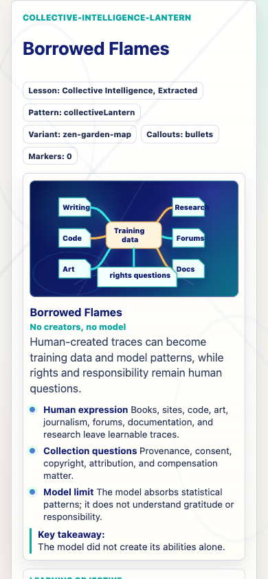
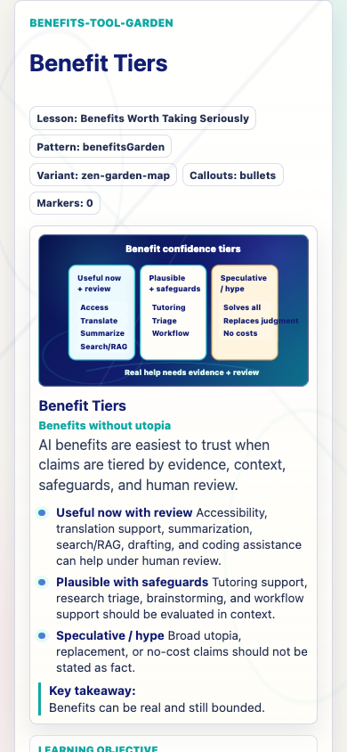
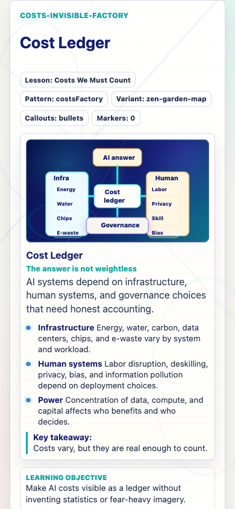
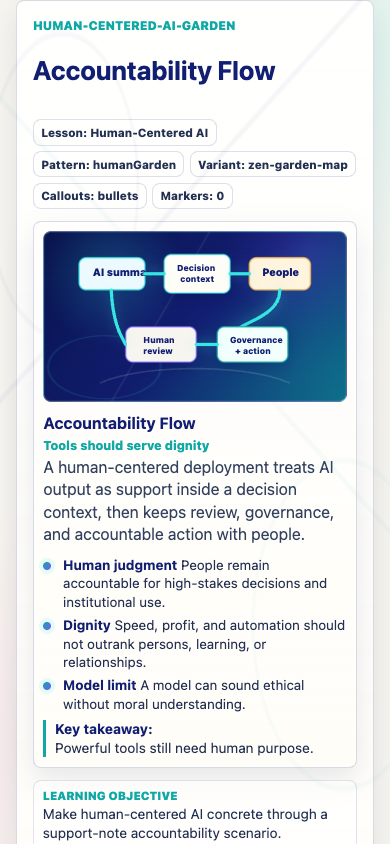
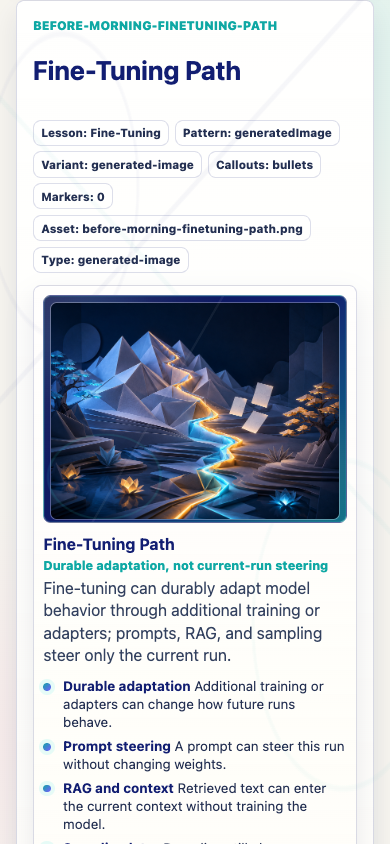
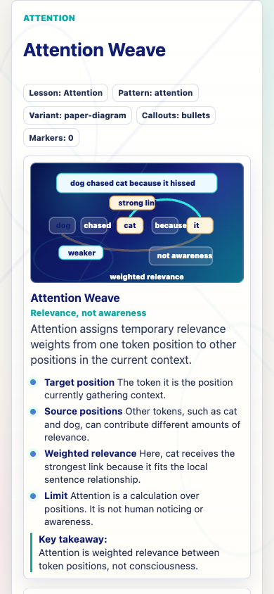
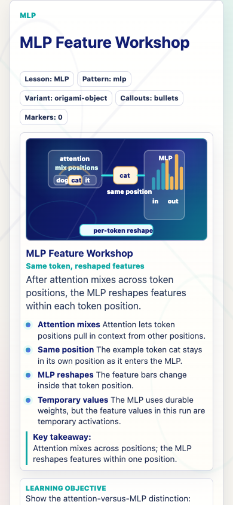
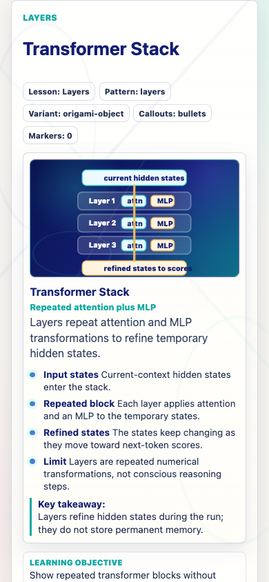
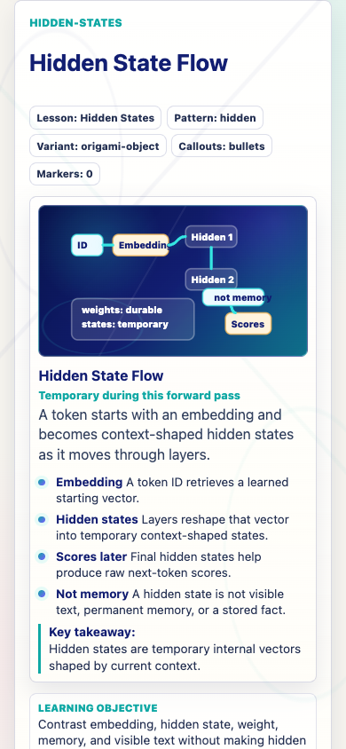
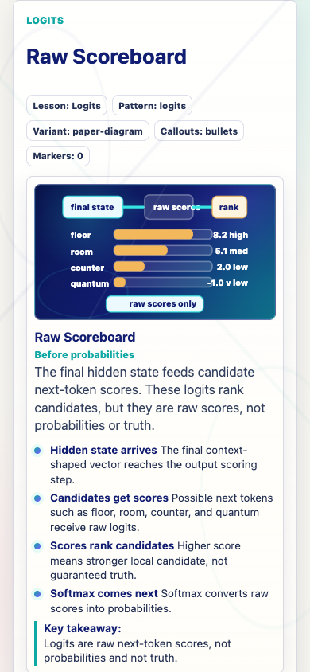
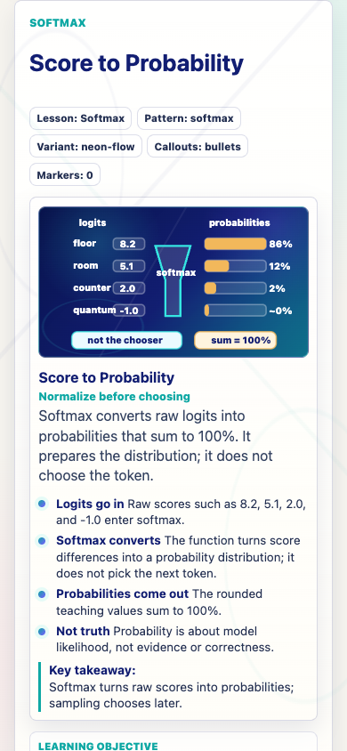
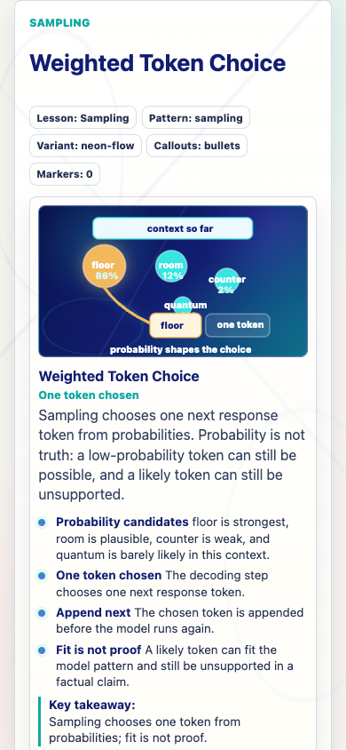
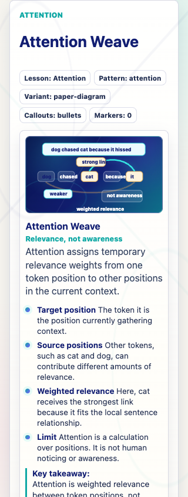
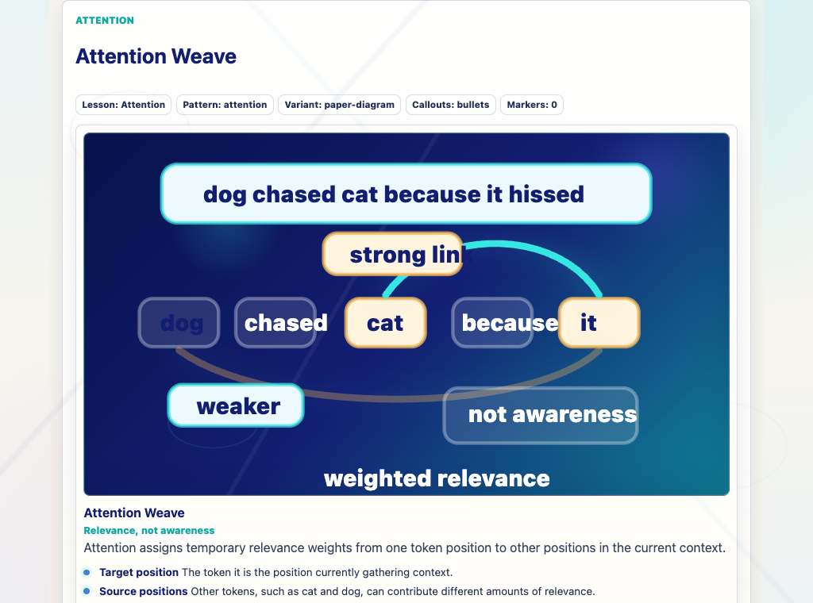
Backlog
The machine-readable backlog is available as visual-aid-quality-backlog-v0-27-17.json and visual-aid-quality-backlog-v0-27-17.csv. It preserves the decision for every priority visual: change now, keep coded, or prepare future Image 2 generation.